每段结果
封面是第 0 帧（翻回正向），点封面或 3D 打开查看器（3D 交接拼接后的轨迹）。数值是该段 avg_pts：3D 交接拼接 / 整段一次，蓝色为同一设置下较高的模型。

a2_s10_w3_cam1静态
A2_S10_ROCKETBOX_H1M2/WORLD_00000003 · 1135 query 点
History v2 3D 交接拼接0.792
Point4D head 3D 交接拼接0.768
History v2 整段一次0.776
Point4D head 整段一次0.726

a2_s11_w2_cam1静态
A2_S11_ROCKETBOX_H1M2/WORLD_00000002 · 578 query 点
History v2 3D 交接拼接0.658
Point4D head 3D 交接拼接0.712
History v2 整段一次0.634
Point4D head 整段一次0.650

a2_s24_w3_cam1静态
A2_S24_ROCKETBOX_H1M2/WORLD_00000003 · 918 query 点
History v2 3D 交接拼接0.865
Point4D head 3D 交接拼接0.785
History v2 整段一次0.853
Point4D head 整段一次0.787
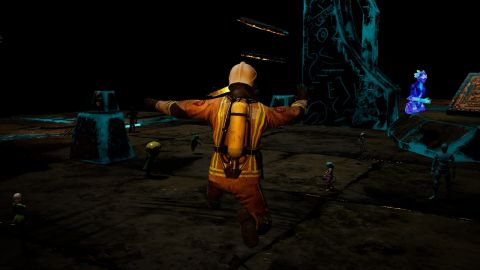
a2_s25_w4_cam0跟拍
A2_S25_ROCKETBOX_H1M2/WORLD_00000004 · 5438 query 点
History v2 3D 交接拼接0.674
Point4D head 3D 交接拼接0.714
History v2 整段一次0.698
Point4D head 整段一次0.715
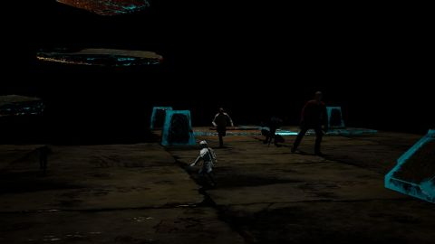
a2_s26_w4_cam1静态
A2_S26_ROCKETBOX_H1M2/WORLD_00000004 · 1092 query 点
History v2 3D 交接拼接0.679
Point4D head 3D 交接拼接0.545
History v2 整段一次0.677
Point4D head 整段一次0.507
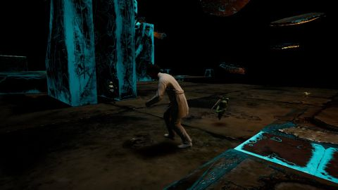
a2_s26_w7_cam0跟拍
A2_S26_ROCKETBOX_H1M2/WORLD_00000007 · 1674 query 点
History v2 3D 交接拼接0.909
Point4D head 3D 交接拼接0.844
History v2 整段一次0.906
Point4D head 整段一次0.843

a2_s27_w1_cam1静态
A2_S27_ROCKETBOX_H1M2/WORLD_00000001 · 1270 query 点
History v2 3D 交接拼接0.286
Point4D head 3D 交接拼接0.270
History v2 整段一次0.329
Point4D head 整段一次0.250

a2_s28_w3_cam0跟拍
A2_S28_ROCKETBOX_H1M2/WORLD_00000003 · 1298 query 点
History v2 3D 交接拼接0.744
Point4D head 3D 交接拼接0.801
History v2 整段一次0.823
Point4D head 整段一次0.846

a2_s30_w2_cam1静态
A2_S30_ROCKETBOX_H1M2/WORLD_00000002 · 3620 query 点
History v2 3D 交接拼接0.692
Point4D head 3D 交接拼接0.585
History v2 整段一次0.699
Point4D head 整段一次0.604

a2_s8_w0_cam1静态
A2_S8_ROCKETBOX_H1M2/WORLD_00000000 · 746 query 点
History v2 3D 交接拼接0.670
Point4D head 3D 交接拼接0.416
History v2 整段一次0.642
Point4D head 整段一次0.378

a3_s11_w7_cam1静态
A3_S11_ROCKETBOX_H1M2/WORLD_00000007 · 1328 query 点
History v2 3D 交接拼接0.583
Point4D head 3D 交接拼接0.735
History v2 整段一次0.759
Point4D head 整段一次0.708

a3_s12_w3_cam0跟拍
A3_S12_ROCKETBOX_H1M2/WORLD_00000003 · 2522 query 点
History v2 3D 交接拼接0.868
Point4D head 3D 交接拼接0.930
History v2 整段一次0.866
Point4D head 整段一次0.916
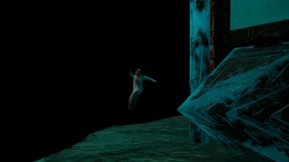
a3_s12_w6_cam1静态
A3_S12_ROCKETBOX_H1M2/WORLD_00000006 · 637 query 点
History v2 3D 交接拼接0.322
Point4D head 3D 交接拼接0.434
History v2 整段一次0.224
Point4D head 整段一次0.340
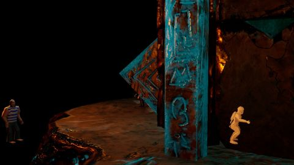
a3_s14_w0_cam1静态
A3_S14_ROCKETBOX_H1M2/WORLD_00000000 · 1033 query 点
History v2 3D 交接拼接0.864
Point4D head 3D 交接拼接0.870
History v2 整段一次0.876
Point4D head 整段一次0.853
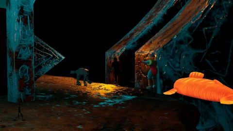
a3_s14_w4_cam1静态
A3_S14_ROCKETBOX_H1M2/WORLD_00000004 · 3015 query 点
History v2 3D 交接拼接0.549
Point4D head 3D 交接拼接0.602
History v2 整段一次0.568
Point4D head 整段一次0.594
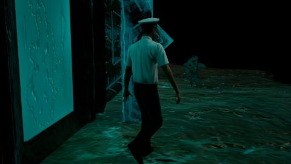
a3_s26_w0_cam0跟拍
A3_S26_ROCKETBOX_H1M2/WORLD_00000000 · 4896 query 点
History v2 3D 交接拼接0.867
Point4D head 3D 交接拼接0.876
History v2 整段一次0.890
Point4D head 整段一次0.875
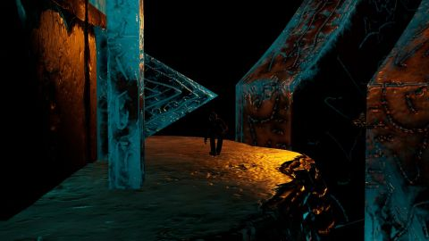
a3_s29_w1_cam1静态
A3_S29_ROCKETBOX_H1M2/WORLD_00000001 · 419 query 点
History v2 3D 交接拼接0.240
Point4D head 3D 交接拼接0.547
History v2 整段一次0.667
Point4D head 整段一次0.542

a3_s33_w2_cam0跟拍
A3_S33_ROCKETBOX_H1M2/WORLD_00000002 · 2148 query 点
History v2 3D 交接拼接0.790
Point4D head 3D 交接拼接0.852
History v2 整段一次0.777
Point4D head 整段一次0.831

fa_s10_w2_cam1静态
FA_S10_ROCKETBOX_H1M2/WORLD_00000002 · 4118 query 点
History v2 3D 交接拼接0.677
Point4D head 3D 交接拼接0.780
History v2 整段一次0.671
Point4D head 整段一次0.762

fa_s10_w3_cam1静态
FA_S10_ROCKETBOX_H1M2/WORLD_00000003 · 1117 query 点
History v2 3D 交接拼接0.724
Point4D head 3D 交接拼接0.555
History v2 整段一次0.596
Point4D head 整段一次0.572

fa_s10_w7_cam0跟拍
FA_S10_ROCKETBOX_H1M2/WORLD_00000007 · 4040 query 点
History v2 3D 交接拼接0.908
Point4D head 3D 交接拼接0.885
History v2 整段一次0.902
Point4D head 整段一次0.845
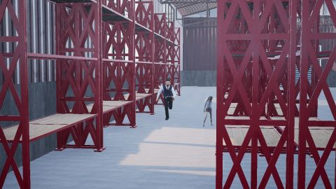
fa_s12_w1_cam1静态
FA_S12_ROCKETBOX_H1M2/WORLD_00000001 · 457 query 点
History v2 3D 交接拼接0.678
Point4D head 3D 交接拼接0.534
History v2 整段一次0.691
Point4D head 整段一次0.481

fa_s12_w6_cam0跟拍
FA_S12_ROCKETBOX_H1M2/WORLD_00000006 · 1888 query 点
History v2 3D 交接拼接0.829
Point4D head 3D 交接拼接0.863
History v2 整段一次0.841
Point4D head 整段一次0.808
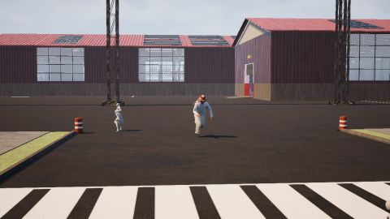
fa_s12_w6_cam1静态
FA_S12_ROCKETBOX_H1M2/WORLD_00000006 · 430 query 点
History v2 3D 交接拼接0.801
Point4D head 3D 交接拼接0.646
History v2 整段一次0.774
Point4D head 整段一次0.468

fa_s23_w5_cam1静态
FA_S23_ROCKETBOX_H1M2/WORLD_00000005 · 672 query 点
History v2 3D 交接拼接0.829
Point4D head 3D 交接拼接0.598
History v2 整段一次0.841
Point4D head 整段一次0.600

fa_s23_w6_cam0跟拍
FA_S23_ROCKETBOX_H1M2/WORLD_00000006 · 2564 query 点
History v2 3D 交接拼接0.612
Point4D head 3D 交接拼接0.601
History v2 整段一次0.652
Point4D head 整段一次0.523

fa_s23_w6_cam1静态
FA_S23_ROCKETBOX_H1M2/WORLD_00000006 · 872 query 点
History v2 3D 交接拼接0.304
Point4D head 3D 交接拼接0.389
History v2 整段一次0.322
Point4D head 整段一次0.290

fa_s26_w1_cam0跟拍
FA_S26_ROCKETBOX_H1M2/WORLD_00000001 · 1590 query 点
History v2 3D 交接拼接0.939
Point4D head 3D 交接拼接0.905
History v2 整段一次0.921
Point4D head 整段一次0.892

fa_s26_w4_cam0跟拍
FA_S26_ROCKETBOX_H1M2/WORLD_00000004 · 3890 query 点
History v2 3D 交接拼接0.825
Point4D head 3D 交接拼接0.869
History v2 整段一次0.846
Point4D head 整段一次0.814

fa_s26_w7_cam1静态
FA_S26_ROCKETBOX_H1M2/WORLD_00000007 · 1694 query 点
History v2 3D 交接拼接0.620
Point4D head 3D 交接拼接0.733
History v2 整段一次0.830
Point4D head 整段一次0.547
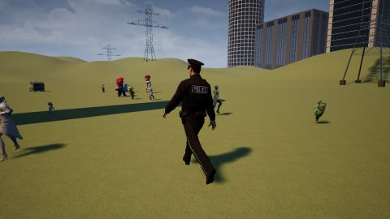
fa_s30_w0_cam0跟拍
FA_S30_ROCKETBOX_H1M2/WORLD_00000000 · 2682 query 点
History v2 3D 交接拼接0.754
Point4D head 3D 交接拼接0.743
History v2 整段一次0.745
Point4D head 整段一次0.718
fa_s32_w2_cam0跟拍
FA_S32_ROCKETBOX_H1M2/WORLD_00000002 · 2069 query 点
History v2 3D 交接拼接0.620
Point4D head 3D 交接拼接0.637
History v2 整段一次0.618
Point4D head 整段一次0.759

fa_s32_w2_cam1静态
FA_S32_ROCKETBOX_H1M2/WORLD_00000002 · 1793 query 点
History v2 3D 交接拼接0.674
Point4D head 3D 交接拼接0.622
History v2 整段一次0.705
Point4D head 整段一次0.668
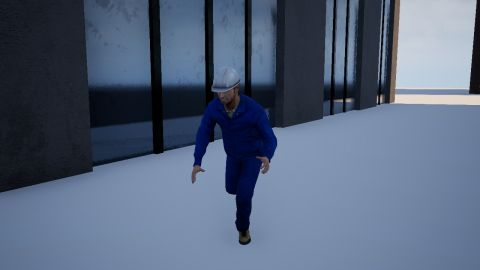
fa_s32_w4_cam0跟拍
FA_S32_ROCKETBOX_H1M2/WORLD_00000004 · 2898 query 点
History v2 3D 交接拼接0.928
Point4D head 3D 交接拼接0.928
History v2 整段一次0.899
Point4D head 整段一次0.900

fa_s32_w5_cam0跟拍
FA_S32_ROCKETBOX_H1M2/WORLD_00000005 · 2430 query 点
History v2 3D 交接拼接0.966
Point4D head 3D 交接拼接0.931
History v2 整段一次0.968
Point4D head 整段一次0.923

fa_s32_w6_cam0跟拍
FA_S32_ROCKETBOX_H1M2/WORLD_00000006 · 3551 query 点
History v2 3D 交接拼接0.836
Point4D head 3D 交接拼接0.825
History v2 整段一次0.817
Point4D head 整段一次0.806

fa_s33_w6_cam0跟拍
FA_S33_ROCKETBOX_H1M2/WORLD_00000006 · 3207 query 点
History v2 3D 交接拼接0.787
Point4D head 3D 交接拼接0.729
History v2 整段一次0.788
Point4D head 整段一次0.697

fv_s27_w1_cam1静态
FV_S27_ROCKETBOX_H1M2/WORLD_00000001 · 928 query 点
History v2 3D 交接拼接0.810
Point4D head 3D 交接拼接0.651
History v2 整段一次0.804
Point4D head 整段一次0.622

fv_s28_w4_cam0跟拍
FV_S28_ROCKETBOX_H1M2/WORLD_00000004 · 1605 query 点
History v2 3D 交接拼接0.648
Point4D head 3D 交接拼接0.645
History v2 整段一次0.605
Point4D head 整段一次0.578

fv_s34_w0_cam0跟拍
FV_S34_ROCKETBOX_H1M2/WORLD_00000000 · 2822 query 点
History v2 3D 交接拼接0.714
Point4D head 3D 交接拼接0.760
History v2 整段一次0.707
Point4D head 整段一次0.679

fv_s35_w3_cam0跟拍
FV_S35_ROCKETBOX_H1M2/WORLD_00000003 · 2766 query 点
History v2 3D 交接拼接0.800
Point4D head 3D 交接拼接0.783
History v2 整段一次0.780
Point4D head 整段一次0.738

fv_s35_w4_cam1静态
FV_S35_ROCKETBOX_H1M2/WORLD_00000004 · 2353 query 点
History v2 3D 交接拼接0.556
Point4D head 3D 交接拼接0.668
History v2 整段一次0.437
Point4D head 整段一次0.605

fv_s7_w2_cam0跟拍
FV_S7_ROCKETBOX_H1M2/WORLD_00000002 · 2999 query 点
History v2 3D 交接拼接0.821
Point4D head 3D 交接拼接0.851
History v2 整段一次0.784
Point4D head 整段一次0.712
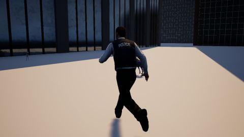
fv_s8_w3_cam0跟拍
FV_S8_ROCKETBOX_H1M2/WORLD_00000003 · 3712 query 点
History v2 3D 交接拼接0.858
Point4D head 3D 交接拼接0.887
History v2 整段一次0.848
Point4D head 整段一次0.750

fv_s9_w2_cam1静态
FV_S9_ROCKETBOX_H1M2/WORLD_00000002 · 1046 query 点
History v2 3D 交接拼接0.754
Point4D head 3D 交接拼接0.726
History v2 整段一次0.776
Point4D head 整段一次0.383

fv_s9_w3_cam1静态
FV_S9_ROCKETBOX_H1M2/WORLD_00000003 · 962 query 点
History v2 3D 交接拼接0.326
Point4D head 3D 交接拼接0.329
History v2 整段一次0.353
Point4D head 整段一次0.374

nk_s23_w3_cam0跟拍
NK_S23_ROCKETBOX_H1M2/WORLD_00000003 · 4330 query 点
History v2 3D 交接拼接0.918
Point4D head 3D 交接拼接0.925
History v2 整段一次0.911
Point4D head 整段一次0.905

nk_s24_w6_cam1静态
NK_S24_ROCKETBOX_H1M2/WORLD_00000006 · 64 query 点
History v2 3D 交接拼接0.746
Point4D head 3D 交接拼接0.473
History v2 整段一次0.777
Point4D head 整段一次0.709

nk_s25_w3_cam0跟拍
NK_S25_ROCKETBOX_H1M2/WORLD_00000003 · 1343 query 点
History v2 3D 交接拼接0.817
Point4D head 3D 交接拼接0.792
History v2 整段一次0.822
Point4D head 整段一次0.774

nk_s25_w4_cam0跟拍
NK_S25_ROCKETBOX_H1M2/WORLD_00000004 · 1712 query 点
History v2 3D 交接拼接0.793
Point4D head 3D 交接拼接0.786
History v2 整段一次0.770
Point4D head 整段一次0.772

nk_s27_w3_cam0跟拍
NK_S27_ROCKETBOX_H1M2/WORLD_00000003 · 1897 query 点
History v2 3D 交接拼接0.784
Point4D head 3D 交接拼接0.789
History v2 整段一次0.818
Point4D head 整段一次0.777

nk_s28_w0_cam0跟拍
NK_S28_ROCKETBOX_H1M2/WORLD_00000000 · 2375 query 点
History v2 3D 交接拼接0.971
Point4D head 3D 交接拼接0.927
History v2 整段一次0.946
Point4D head 整段一次0.919
nq_s10_w7_cam1静态
NQ_S10_ROCKETBOX_H1M2/WORLD_00000007 · 279 query 点
History v2 3D 交接拼接0.666
Point4D head 3D 交接拼接0.557
History v2 整段一次0.671
Point4D head 整段一次0.539
nq_s23_w2_cam0跟拍
NQ_S23_ROCKETBOX_H1M2/WORLD_00000002 · 1829 query 点
History v2 3D 交接拼接0.833
Point4D head 3D 交接拼接0.847
History v2 整段一次0.854
Point4D head 整段一次0.832

nq_s23_w2_cam1静态
NQ_S23_ROCKETBOX_H1M2/WORLD_00000002 · 1046 query 点
History v2 3D 交接拼接0.817
Point4D head 3D 交接拼接0.511
History v2 整段一次0.815
Point4D head 整段一次0.632

nq_s26_w3_cam0跟拍
NQ_S26_ROCKETBOX_H1M2/WORLD_00000003 · 719 query 点
History v2 3D 交接拼接0.729
Point4D head 3D 交接拼接0.509
History v2 整段一次0.673
Point4D head 整段一次0.479

nq_s26_w6_cam0跟拍
NQ_S26_ROCKETBOX_H1M2/WORLD_00000006 · 1769 query 点
History v2 3D 交接拼接0.818
Point4D head 3D 交接拼接0.847
History v2 整段一次0.842
Point4D head 整段一次0.874

nq_s26_w7_cam1静态
NQ_S26_ROCKETBOX_H1M2/WORLD_00000007 · 1422 query 点
History v2 3D 交接拼接0.419
Point4D head 3D 交接拼接0.522
History v2 整段一次0.453
Point4D head 整段一次0.457

nq_s27_w5_cam0跟拍
NQ_S27_ROCKETBOX_H1M2/WORLD_00000005 · 2042 query 点
History v2 3D 交接拼接0.823
Point4D head 3D 交接拼接0.803
History v2 整段一次0.848
Point4D head 整段一次0.762
nq_s28_w5_cam0跟拍
NQ_S28_ROCKETBOX_H1M2/WORLD_00000005 · 2504 query 点
History v2 3D 交接拼接0.830
Point4D head 3D 交接拼接0.846
History v2 整段一次0.824
Point4D head 整段一次0.819

nq_s29_w7_cam0跟拍
NQ_S29_ROCKETBOX_H1M2/WORLD_00000007 · 3481 query 点
History v2 3D 交接拼接0.835
Point4D head 3D 交接拼接0.824
History v2 整段一次0.844
Point4D head 整段一次0.803

nq_s29_w7_cam1静态
NQ_S29_ROCKETBOX_H1M2/WORLD_00000007 · 1639 query 点
History v2 3D 交接拼接0.918
Point4D head 3D 交接拼接0.803
History v2 整段一次0.910
Point4D head 整段一次0.788

nq_s30_w2_cam1静态
NQ_S30_ROCKETBOX_H1M2/WORLD_00000002 · 637 query 点
History v2 3D 交接拼接0.660
Point4D head 3D 交接拼接0.613
History v2 整段一次0.651
Point4D head 整段一次0.541

nq_s31_w1_cam1静态
NQ_S31_ROCKETBOX_H1M2/WORLD_00000001 · 654 query 点
History v2 3D 交接拼接0.450
Point4D head 3D 交接拼接0.342
History v2 整段一次0.375
Point4D head 整段一次0.356

nq_s31_w5_cam0跟拍
NQ_S31_ROCKETBOX_H1M2/WORLD_00000005 · 2347 query 点
History v2 3D 交接拼接0.739
Point4D head 3D 交接拼接0.779
History v2 整段一次0.754
Point4D head 整段一次0.769
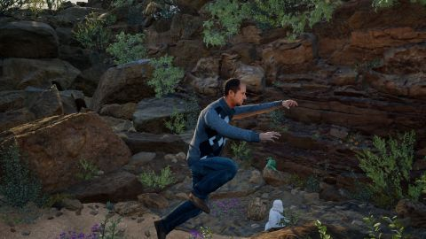
nq_s32_w3_cam0跟拍
NQ_S32_ROCKETBOX_H1M2/WORLD_00000003 · 3598 query 点
History v2 3D 交接拼接0.824
Point4D head 3D 交接拼接0.796
History v2 整段一次0.812
Point4D head 整段一次0.778

nq_s7_w1_cam0跟拍
NQ_S7_ROCKETBOX_H1M2/WORLD_00000001 · 3415 query 点
History v2 3D 交接拼接0.642
Point4D head 3D 交接拼接0.686
History v2 整段一次0.654
Point4D head 整段一次0.646

nq_s7_w1_cam1静态
NQ_S7_ROCKETBOX_H1M2/WORLD_00000001 · 20843 query 点
History v2 3D 交接拼接0.659
Point4D head 3D 交接拼接0.920
History v2 整段一次0.619
Point4D head 整段一次0.707

nq_s7_w3_cam0跟拍
NQ_S7_ROCKETBOX_H1M2/WORLD_00000003 · 1958 query 点
History v2 3D 交接拼接0.767
Point4D head 3D 交接拼接0.794
History v2 整段一次0.877
Point4D head 整段一次0.838
nq_s7_w3_cam1静态
NQ_S7_ROCKETBOX_H1M2/WORLD_00000003 · 2190 query 点
History v2 3D 交接拼接0.729
Point4D head 3D 交接拼接0.693
History v2 整段一次0.722
Point4D head 整段一次0.707

nq_s8_w0_cam0跟拍
NQ_S8_ROCKETBOX_H1M2/WORLD_00000000 · 1644 query 点
History v2 3D 交接拼接0.787
Point4D head 3D 交接拼接0.842
History v2 整段一次0.822
Point4D head 整段一次0.822

nq_s8_w3_cam0跟拍
NQ_S8_ROCKETBOX_H1M2/WORLD_00000003 · 1328 query 点
History v2 3D 交接拼接0.690
Point4D head 3D 交接拼接0.763
History v2 整段一次0.591
Point4D head 整段一次0.734

nq_s8_w4_cam1静态
NQ_S8_ROCKETBOX_H1M2/WORLD_00000004 · 508 query 点
History v2 3D 交接拼接0.334
Point4D head 3D 交接拼接0.303
History v2 整段一次0.389
Point4D head 整段一次0.306

nq_s8_w5_cam1静态
NQ_S8_ROCKETBOX_H1M2/WORLD_00000005 · 615 query 点
History v2 3D 交接拼接0.807
Point4D head 3D 交接拼接0.730
History v2 整段一次0.830
Point4D head 整段一次0.694
ru_s9_w1_cam0跟拍
RU_S9_ROCKETBOX_H1M2/WORLD_00000001 · 7801 query 点
History v2 3D 交接拼接0.920
Point4D head 3D 交接拼接0.965
History v2 整段一次0.922
Point4D head 整段一次0.956

ruc3_s10_w0_cam0跟拍
RUC3_S10_ROCKETBOX_H1M2/WORLD_00000000 · 10348 query 点
History v2 3D 交接拼接0.960
Point4D head 3D 交接拼接0.967
History v2 整段一次0.946
Point4D head 整段一次0.957

ruc3_s7_w0_cam0跟拍
RUC3_S7_ROCKETBOX_H1M2/WORLD_00000000 · 8445 query 点
History v2 3D 交接拼接0.992
Point4D head 3D 交接拼接0.976
History v2 整段一次0.984
Point4D head 整段一次0.963

ruc3_s9_w1_cam0跟拍
RUC3_S9_ROCKETBOX_H1M2/WORLD_00000001 · 7801 query 点
History v2 3D 交接拼接0.930
Point4D head 3D 交接拼接0.964
History v2 整段一次0.928
Point4D head 整段一次0.955

ruc5_s23_w0_cam1静态
RUC5_S23_ROCKETBOX_H1M2/WORLD_00000000 · 3887 query 点
History v2 3D 交接拼接0.968
Point4D head 3D 交接拼接0.969
History v2 整段一次0.957
Point4D head 整段一次0.931

sf_s10_w5_cam1静态
SF_S10_ROCKETBOX_H1M2/WORLD_00000005 · 1151 query 点
History v2 3D 交接拼接0.917
Point4D head 3D 交接拼接0.929
History v2 整段一次0.918
Point4D head 整段一次0.892
sf_s20_w0_cam0跟拍
SF_S20_ROCKETBOX_H1M2/WORLD_00000000 · 7779 query 点
History v2 3D 交接拼接0.971
Point4D head 3D 交接拼接0.967
History v2 整段一次0.963
Point4D head 整段一次0.964
sfc3_s10_w5_cam1静态
SFC3_S10_ROCKETBOX_H1M2/WORLD_00000005 · 1692 query 点
History v2 3D 交接拼接0.755
Point4D head 3D 交接拼接0.703
History v2 整段一次0.728
Point4D head 整段一次0.678

sfc3_s16_w2_cam1静态
SFC3_S16_ROCKETBOX_H1M2/WORLD_00000002 · 2322 query 点
History v2 3D 交接拼接0.801
Point4D head 3D 交接拼接0.863
History v2 整段一次0.793
Point4D head 整段一次0.842

sfc3_s18_w2_cam1静态
SFC3_S18_ROCKETBOX_H1M2/WORLD_00000002 · 3586 query 点
History v2 3D 交接拼接0.818
Point4D head 3D 交接拼接0.858
History v2 整段一次0.807
Point4D head 整段一次0.821

sfc5_s23_w1_cam1静态
SFC5_S23_ROCKETBOX_H1M2/WORLD_00000001 · 2161 query 点
History v2 3D 交接拼接0.709
Point4D head 3D 交接拼接0.702
History v2 整段一次0.781
Point4D head 整段一次0.749

sfc5_s26_w3_cam1静态
SFC5_S26_ROCKETBOX_H1M2/WORLD_00000003 · 1858 query 点
History v2 3D 交接拼接0.877
Point4D head 3D 交接拼接0.896
History v2 整段一次0.833
Point4D head 整段一次0.849
sfc5_s27_w0_cam1静态
SFC5_S27_ROCKETBOX_H1M2/WORLD_00000000 · 1740 query 点
History v2 3D 交接拼接0.955
Point4D head 3D 交接拼接0.937
History v2 整段一次0.943
Point4D head 整段一次0.919
sfc5_s27_w3_cam1静态
SFC5_S27_ROCKETBOX_H1M2/WORLD_00000003 · 5969 query 点
History v2 3D 交接拼接0.869
Point4D head 3D 交接拼接0.896
History v2 整段一次0.843
Point4D head 整段一次0.876

sfc5_s31_w3_cam0跟拍
SFC5_S31_ROCKETBOX_H1M2/WORLD_00000003 · 8063 query 点
History v2 3D 交接拼接0.938
Point4D head 3D 交接拼接0.963
History v2 整段一次0.918
Point4D head 整段一次0.944
sfc5_s32_w2_cam0跟拍
SFC5_S32_ROCKETBOX_H1M2/WORLD_00000002 · 8534 query 点
History v2 3D 交接拼接0.921
Point4D head 3D 交接拼接0.926
History v2 整段一次0.896
Point4D head 整段一次0.896

sfc5_s38_w1_cam0跟拍
SFC5_S38_ROCKETBOX_H1M2/WORLD_00000001 · 7478 query 点
History v2 3D 交接拼接0.922
Point4D head 3D 交接拼接0.928
History v2 整段一次0.880
Point4D head 整段一次0.850

sfc5_s41_w0_cam0跟拍
SFC5_S41_ROCKETBOX_H1M2/WORLD_00000000 · 10216 query 点
History v2 3D 交接拼接0.982
Point4D head 3D 交接拼接0.968
History v2 整段一次0.979
Point4D head 整段一次0.961

sfc5_s47_w1_cam1静态
SFC5_S47_ROCKETBOX_H1M2/WORLD_00000001 · 2618 query 点
History v2 3D 交接拼接0.795
Point4D head 3D 交接拼接0.736
History v2 整段一次0.790
Point4D head 整段一次0.768

sfc5_s49_w1_cam0跟拍
SFC5_S49_ROCKETBOX_H1M2/WORLD_00000001 · 7994 query 点
History v2 3D 交接拼接0.833
Point4D head 3D 交接拼接0.883
History v2 整段一次0.808
Point4D head 整段一次0.840

sfc5_s50_w0_cam1静态
SFC5_S50_ROCKETBOX_H1M2/WORLD_00000000 · 6146 query 点
History v2 3D 交接拼接0.858
Point4D head 3D 交接拼接0.837
History v2 整段一次0.856
Point4D head 整段一次0.815

sfc5_s52_w1_cam1静态
SFC5_S52_ROCKETBOX_H1M2/WORLD_00000001 · 4007 query 点
History v2 3D 交接拼接0.851
Point4D head 3D 交接拼接0.779
History v2 整段一次0.850
Point4D head 整段一次0.822
sfc5_s53_w0_cam0跟拍
SFC5_S53_ROCKETBOX_H1M2/WORLD_00000000 · 6986 query 点
History v2 3D 交接拼接0.983
Point4D head 3D 交接拼接0.965
History v2 整段一次0.977
Point4D head 整段一次0.959
sfc5_s53_w0_cam1静态
SFC5_S53_ROCKETBOX_H1M2/WORLD_00000000 · 1914 query 点
History v2 3D 交接拼接0.948
Point4D head 3D 交接拼接0.905
History v2 整段一次0.932
Point4D head 整段一次0.886

sfc5_s53_w2_cam1静态
SFC5_S53_ROCKETBOX_H1M2/WORLD_00000002 · 3281 query 点
History v2 3D 交接拼接0.805
Point4D head 3D 交接拼接0.681
History v2 整段一次0.851
Point4D head 整段一次0.822

sfc5_s54_w6_cam1静态
SFC5_S54_ROCKETBOX_H1M2/WORLD_00000006 · 3206 query 点
History v2 3D 交接拼接0.670
Point4D head 3D 交接拼接0.831
History v2 整段一次0.854
Point4D head 整段一次0.832